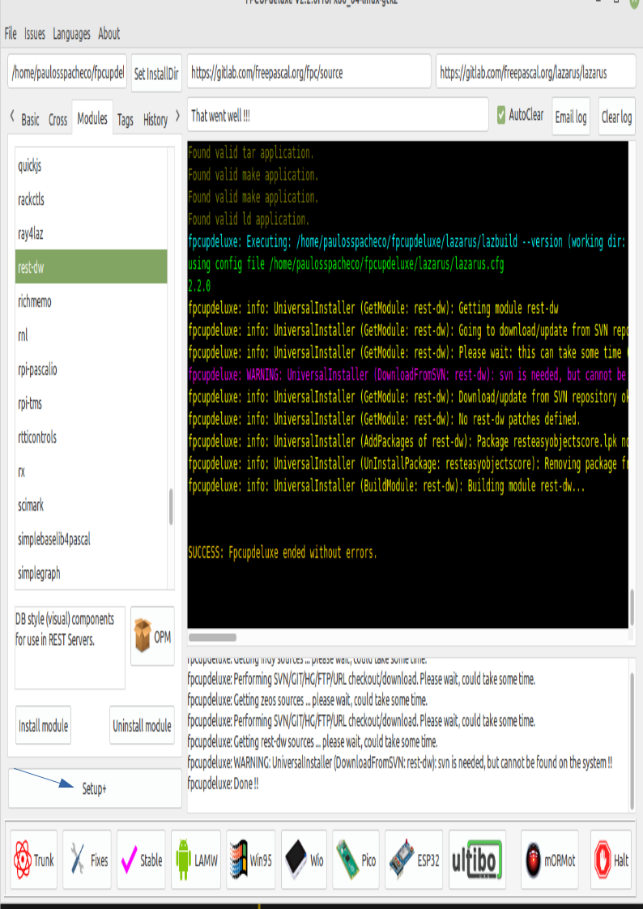
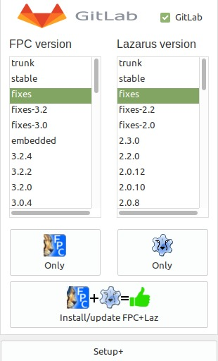

1. INDEX
-
Introdução
2. CONTEÚDO
-
Resumo do conteúdo:
- Descreve um resumo de como foi feito esse documento com as facilidade encontradas para produzi-lo e dificuldade encontrada.
-
Introdução
-
Objetivo:
-
O Lazarus é um ambiente de desenvolvimento integrado (IDE) para programação em Pascal. Ele é utilizado principalmente para o desenvolvimento de software usando a linguagem de programação Object Pascal. O Lazarus é uma alternativa de código aberto à IDE Delphi, que é amplamente conhecida por facilitar o desenvolvimento rápido de aplicativos para Windows.
-
O Lazarus é conhecido por ser multiplataforma, o que significa que os aplicativos desenvolvidos nele podem ser compilados e executados em diferentes sistemas operacionais, como Windows, Linux, macOS, entre outros. Ele utiliza o framework Free Pascal, que é um compilador Pascal de código aberto.
-
Além disso, o Lazarus oferece uma interface gráfica de usuário (GUI) para facilitar o design de interfaces de usuário para aplicativos. Ele fornece ferramentas para desenvolvimento rápido e possui recursos que simplificam a criação de aplicativos visuais.
-
O Lazarus é uma escolha popular para desenvolvedores que desejam criar aplicativos usando Pascal, especialmente aqueles que desejam criar software de desktop multiplataforma..
-
[🔙]
-
-
Pre-requisitos:
-
Para utilizar o Lazarus, você precisa atender a certos requisitos dependendo do sistema operacional em que deseja desenvolver. Aqui estão os requisitos básicos para alguns sistemas operacionais comuns:
- Conhecer a linguagem Pascal versão turbo pascal, Delphi ou Free pascal.
- Requisitos Gerais:
- Lazarus IDE: Baixe e instale a versão mais recente do Lazarus IDE no site oficial (https://www.lazarus-ide.org/).
- Para Windows:
- Sistema Operacional: Windows XP ou posterior.
- Compilador: O Lazarus geralmente usa o Free Pascal Compiler (FPC), que é incluído no pacote de instalação.
- Para Linux:
- Sistema Operacional: Lazarus é suportado em várias distribuições Linux. Certifique-se de atender aos requisitos específicos da sua distribuição.
- Compilador: O Free Pascal Compiler (FPC) também deve ser instalado. Você pode instalá-lo usando o gerenciador de pacotes da sua distribuição.
- Para macOS:
- Sistema Operacional: macOS 10.5 ou posterior.
- Xcode: Certifique-se de ter o Xcode instalado, pois ele inclui ferramentas necessárias para o desenvolvimento.
- Para Desenvolvimento Multiplataforma:
- Se você planeja criar aplicativos que podem ser executados em várias plataformas, é importante garantir que o código seja compatível. Evite dependências específicas do sistema operacional sempre que possível e teste seu aplicativo em diferentes sistemas para garantir a compatibilidade.
- Lembre-se de verificar a documentação oficial do Lazarus para obter informações mais detalhadas e atualizadas sobre os requisitos de sistema, pois eles podem ter mudado desde a última atualização deste conhecimento.
-
[🔙]
-
-
Benefícios:
-
O Lazarus oferece vários benefícios como uma IDE para o desenvolvimento de software, especialmente para projetos que utilizam a linguagem de programação Pascal. Aqui estão alguns dos benefícios associados ao uso do Lazarus:
-
Código Fonte Aberto:
- Lazarus é uma IDE de código aberto, o que significa que você pode acessar, modificar e distribuir o código-fonte conforme necessário. Isso proporciona uma grande flexibilidade aos desenvolvedores.
-
Multiplataforma:
- Permite o desenvolvimento de aplicativos que podem ser compilados e executados em diferentes sistemas operacionais, como Windows, Linux e macOS. Isso é possível devido à compatibilidade do Lazarus com o compilador Free Pascal.
-
Compatibilidade com Delphi:
- O Lazarus é compatível com a linguagem de programação Object Pascal e compartilha muitas semelhanças com o Delphi, uma popular IDE para Pascal. Isso significa que os desenvolvedores que estão familiarizados com o Delphi podem encontrar o Lazarus mais fácil de aprender e usar.
-
Desenvolvimento Rápido de Interfaces Gráficas:
- Oferece ferramentas gráficas para o design rápido de interfaces de usuário (GUI). Isso é particularmente útil para o desenvolvimento de aplicativos com interfaces visuais complexas.
-
Comunidade Ativa:
- O Lazarus possui uma comunidade ativa de desenvolvedores que oferecem suporte e colaboração. Fóruns, grupos de discussão e outros recursos estão disponíveis para ajudar os desenvolvedores a superar desafios e trocar conhecimentos.
-
Totalmente Gratuito:
- Lazarus é distribuído sob a licença GPL (General Public License), o que significa que é totalmente gratuito para uso. Isso é particularmente atraente para desenvolvedores e organizações que desejam evitar custos de licenciamento.
-
Extensibilidade:
- Pode ser estendido com componentes e plugins adicionais para fornecer funcionalidades adicionais. Isso permite que os desenvolvedores personalizem o ambiente de desenvolvimento conforme necessário.
-
Suporte a Banco de Dados:
- Integra facilmente com diversos bancos de dados, facilitando o desenvolvimento de aplicativos que requerem interação com sistemas de gerenciamento de banco de dados.
-
Ferramentas de Depuração:
- Oferece ferramentas de depuração robustas para ajudar os desenvolvedores a identificar e corrigir problemas no código.
-
Documentação Abundante:
- O Lazarus possui uma documentação abrangente que ajuda os desenvolvedores a entenderem e utilizarem eficientemente todas as funcionalidades oferecidas pela IDE.
-
A IDE Lazarus permite criar formulários visualmente, compila-los e executa-los ao pressionar a tela f9.
-
A IDE possui o programa FPDebug que permite executar o programa passo a passo pressionado a tecla F7.
-
Lembrando que a escolha de uma IDE depende das necessidades específicas do desenvolvedor e do projeto em questão. O Lazarus é uma opção atraente para aqueles que buscam uma solução de desenvolvimento Pascal de código aberto e multiplataforma.
-
[🔙]
-
-
Desvantagens.
-
Considerando ferramenta gráfica multiplataforma para desenvolvimento pascal não tem concorrente, por isso fica difícil relatar as desvantagens da IDE em relação a outras.
-
[🔙]
-
-
-
Conteúdo estudado
- Como instalar o Lazarus e FreePascal
-
É importante que o Lazarus seja instalado para que todos os usuários possa utiliza-lo. Para que isso seja possível, deve-se criar uma pasta de nome lazarus dentro da pasta /usr/local, em seguida da direito de acesso a todos os usuários:
-
Exemplo:
sudo mkdir /usr/local/lazarus sudo chmod -R ugo+rxw /usr/local/lazarus
-
-
Instalar o aplicativo FPCupDeLuxe no Linux Debian ou derivados.
-
Instalando as dependências:
sudo apt-get install libx11-dev sudo apt-get install libgtk2.0-dev sudo apt-get install libcairo2-dev sudo apt-get install libpango1.0-dev sudo apt-get install libxtst-dev sudo apt-get install libgdk-pixbuf2.0-dev sudo apt-get install libatk1.0-dev sudo apt-get install libghc-x11-dev sudo apt-get install libgl1-mesa-dev sudo apt-get install git sudo apt-get install mercurial -
Criar pasta /usr/local/lazarus/fpcupdeluxe
mkdir -o /usr/local/lazarus/fpcupdeluxe -
Baixar o programa FpCupDeLuxe para a pasta /usr/local/lazarus/fpcupdeluxe :
-
Executar programa fpcupdeluxe-x86_64-linux
cd /usr/local/lazarus/fpcupdeluxe ./fpcupdeluxe-x86_64-linux -
Configurar FpCupeDeLuxe para instalar o FPC com opção de debug de todos os pacotes, inclusive a FCL, LCL etc...
-
Selecionar a opção Setup+ do FpCupDeLuxe:
- 

-
Pressione o botão Setup+ do FpCupDeLuxe, para editar o formulário de Opções Avançadas:
- Adicione os comandos -g -gl -O- no campo "FPC Options".
-
-
-
Instalar Lazarus com o programa FPCupDeLuxe:
-
Executar programa FpCupDeLuxe
-
No painel GitLab selecione a versão Fixed para o compilador FPC e para IDE Lazarus.
- .
-
Pressionar o botão:
- .
-
-
Instalar pacotes opcionais.
- Na área de trabalho seleciona o ícone Lazarus_fpcupdeluxe.
- Selecione a opção /Pacotes/instalar/disponíveis para instalação/:
-
No painel Disponíveis para instalar selecione os seguintes pacotes:
-
Para transformar em janela única:
-
Instalar a opção de grupo de projetos.
-
-
No painel Disponíveis para instalar pressione o botão Instalar pacotes selecionados.
-
No painel de botões abaixo do painel Disponíveis para instalar pressione o botão Salvar e reconstruir a IDE
-
-
Referências:
-
[🔙]
-
[🔙]
- Como instalar o Lazarus e FreePascal
-
14/12/2023
- Criar este documento baseado no modelo03.md ;
- Escrever tópico Objetivos;
- Escrever tópico Pre-requisitos
- Escrever tópico Benefícios
- Escrever tópico desvantagens
- Escrever tópico Conteúdo
-
Escrever tópico Referências
-
Atualizar o histórico deste documento.
-
Testar este documento depois após uma semana de concluído.
-
[🔙]
{kind=link}